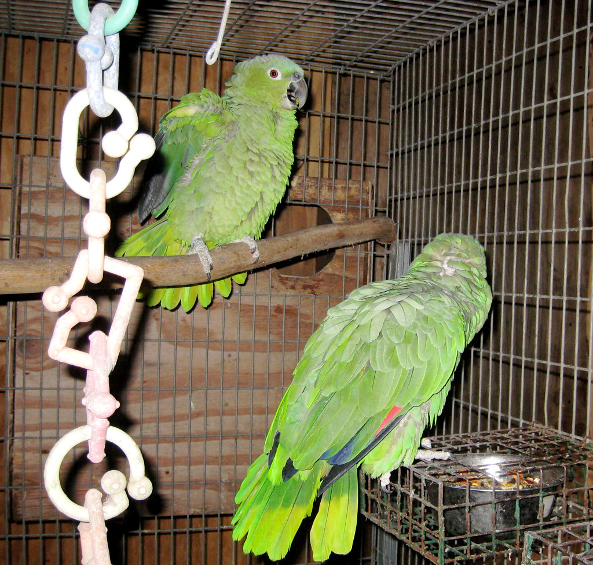

Características da Espécie
Sobre o Conuro
Os conuros são um grupo diverso de psitacídeos de pequeno a médio porte, agrupando principalmente os géneros Aratinga, Pyrrhura e vários outros géneros relacionados originários da América Central e do Sul. Com cores que vão do verde discreto aos amarelos e laranjas explosivos, passando por verdes com manchas multicoloridas, os conuros são autênticas joias tropicais em miniatura.
Em Portugal, os conuros têm vindo a ganhar enorme popularidade nos últimos anos, e é fácil perceber porquê: são suficientemente pequenos para um apartamento, suficientemente activos e brincalhões para manter qualquer tutor entretido, e têm uma expectativa de vida razoável (15 a 30 anos consoante a espécie) que justifica o investimento emocional.
Entre as espécies mais populares disponíveis em Portugal destacam-se o Conuro Sol (Aratinga solstitialis) — absolutamente espectacular com as suas cores amarelas e laranjas —, o Conuro Verde (Aratinga holochlora), o Conuro Marianinha (Pyrrhura molinae) — conhecido pela sua maior quietude — e o Conuro Jenday (Aratinga jandaya).
A Paraíso de Aves disponibiliza conuros criados à mão com toda a documentação CITES. Contacte-nos para informação sobre as espécies disponíveis em cada momento — a variedade de conuros que trabalhamos pode variar consoante a época e disponibilidade.
Temperamento e Inteligência
Os conuros são, por natureza, aves de alta energia e grande sociabilidade. São curiosos, brincalhões e demonstram uma afectividade genuína com os seus tutores — adoram ser transportados no ombro ou no bolso de uma camisola, e são conhecidos por inventar jogos e brincadeiras espontâneas.
Existe alguma variação de temperamento entre géneros: os Pyrrhura tendem a ser mais quietos e menos ruidosos, tornando-os excelentes para apartamentos urbanos. Os Aratinga são geralmente mais vocais e extrovertidos — mais animados mas também mais ruidosos.
Convivência com Outros Animais
Os conuros são geralmente muito sociáveis com outros conuros e podem ser mantidos em pares ou pequenos grupos com bons resultados. A coexistência com cães ou gatos requer supervisão permanente — o tamanho pequeno do conuro torna-o vulnerável. Com crianças mais velhas e calmas, é geralmente uma relação muito bem-sucedida.
Alimentação
A dieta do conuro deve ser variada e equilibrada, semelhante à de outros psitacídeos mas adaptada ao seu tamanho menor:
- Mix de sementes e pellets pequenos: 40–50% da dieta
- Frutas frescas: Maçã, pêra, uvas (sem sementes), manga, kiwi, frutos silvestres — cortados em pedaços pequenos
- Vegetais frescos: Pimento, cenoura, brócolo, couve, milho
- Proteínas: Ovo cozido picado (pequena quantidade, 2–3 vezes por semana)
- Osso de sépia: Disponível permanentemente
Os conuros apreciam especialmente alimentos que possam segurar com as patas enquanto comem — nozes pequenas, uvas inteiras, pedaços de cenoura. Este comportamento de alimentação "à mão" é delicioso de observar e fornece estimulação adicional.
Jaula e Habitat
Para um conuro de tamanho médio, a jaula mínima deve ter 60 cm × 50 cm × 80 cm — embora, como sempre, maior seja melhor. O espaçamento entre os varões não deve exceder 1,5 cm para evitar que a ave se prenda ou escape.
Os conuros são aves activas que adoram subir, balançar e explorar — invista numa jaula com múltiplos poleiros a diferentes alturas, baloiços e brinquedos de destruição de tamanho adequado.
- Poleiros de madeira natural de 1–2 cm de diâmetro
- Baloiço — os conuros adoram
- Brinquedos de destruição de tamanho pequeno
- Sinos e campainhas — adoram fazer barulho
- Espelho — muitos conuros adoram interagir com o seu reflexo
Cuidados Diários e Exercício
Apesar do tamanho menor, o conuro não tem necessidades de cuidados proporcionalmente menores — requer pelo menos 2 a 3 horas de interacção diária fora da jaula. É uma ave que prospera com rotinas consistentes e atenção regular.
O banho deve ser oferecido 2 a 3 vezes por semana. A maioria dos conuros adora banhos — muitos entram voluntariamente num recipiente raso com água ou reagem com entusiasmo ao spray de água morna.
Treino
Os conuros respondem muito bem ao treino por reforço positivo. Aprendem facilmente a "fazer de conta que está morto", a dar a pata, a voar para o braço do tutor e muitos outros truques divertidos. O treino não só estimula cognitivamente a ave como estreita significativamente a relação.
Saúde e Veterinário
Os conuros são geralmente saudáveis e resistentes quando bem cuidados. As principais questões de saúde incluem:
- Proventiculite Dilatante: Afecta particularmente os conuros — monitorize perda de peso, regurgitação ou fezes anormais.
- PBFD: Vírus que pode afectar qualquer psitacídeo. Detecção anual por análise de sangue.
- Parasitas internos: Especialmente em aves com acesso a espaços exteriores. Análise de fezes semestral recomendada.
Consultas veterinárias anuais com especialista em aves são suficientes para manutenção da saúde preventiva em conuros saudáveis.
Documentação CITES e Legislação em Portugal
A maioria das espécies de conuro está incluída no Apêndice II da CITES. Algumas espécies mais raras podem estar no Apêndice I. Em Portugal, a documentação de criador registado é obrigatória. A Paraíso de Aves fornece toda a documentação legal necessária com cada exemplar.
Entrega em Portugal e Processo de Reserva
Entregamos conuros em todo Portugal continental, Madeira e Açores. Para Portugal continental, a entrega demora 1 a 3 dias úteis após confirmação. Dada a menor dimensão da ave, o transporte é geralmente mais simples e económico do que para espécies maiores.
Contacte-nos para verificar as espécies disponíveis e obter uma cotação completa.
Por que Escolher a Paraíso de Aves?
25+ Anos de Experiência
Criador registado desde 1998 com histórico comprovado.
CITES Oficial
Toda a documentação legal CITES incluída no preço.
Criados à Mão
Socializados desde bebés para máxima confiança.
Entrega Segura
Envio certificado para qualquer ponto de Portugal.
Garantia de Saúde
Certificado veterinário e acompanhamento pós-venda.
Apoio Personalizado
Aconselhamento antes e depois da adopção.
Perguntas Frequentes sobre o Conuro
Espécies Relacionadas
Interessado em Adoptar um Conuro?
Contacte-nos para verificar disponibilidade e iniciar o processo de reserva. Entregamos em todo Portugal continental, Madeira e Açores.
Solicitar Disponibilidade Enviar E-mail